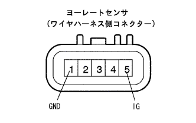

DTC C1234/34 ヨーレートセンサ異常 |
DTC C1210/36 ヨーレートセンサ0点未補正 |
DTC C1232/32 Gセンサ固着異常 |
DTC C1243/43 Gセンサ固着異常 |
DTC C1244/44 Gセンサ断線またはショート |
DTC C1245/45 Gセンサ出力異常 |
DTC C1336/39 Gセンサ0点未補正 |
DTC C1381/97 Gセンサ電源電圧異常 |
| DTCNo. | DTC検出条件 | DTC出力関連項目 |
|---|---|---|
| C1210/36 | ヨーレートセンサの0点が未補正 | (0点取得を行い、コード消去後、出力されなければ故障ではない。) |
| C1232/32 | 車速30ｋｍ/ｈから0ｋｍ/ｈになるまでの間にGL1、GL2の値がともに変化しない状態が16回以上発生 |
|
| C1234/34 | ヨーレートセンサからの異常信号を受信した場合 |
|
| C1243/43 | 車速30ｋｍ/ｈから0ｋｍ/ｈになるまでの間にGL1、GL2の値がともに変化しない状態が16回以上発生 |
|
| C1244/44 |
|
|
| C1245/45 | 車速30km/h以上でGセンサ値から算出した前後Gと車速から演算した前後Gの差が0.35Gを超える状態が60秒以上継続 |
|
| C1336/39 | デセラレーションセンサの0点が未補正 | (0点取得を行い、コード消去後、出力されなければ故障ではない。) |
| C1381/97 | 車速3km/h以上でGセンサ電源異常状態の信号を10秒以上受信 |
|
| ＳＡＥダイアグコード | ＡＢＳランプ表示コード | ＶＳCランプ表示コード |
|---|---|---|
| C1210 | － | 36 |
| C1232 | － | 32 |
| C1234 | － | 34 |
| C1243 | 43 | 43 |
| C1244 | 44 | 43 |
| C1245 | 45 | 43 |
| C1336 | － | 39 |
| C1381 | 97 | 43 |

| 手順1 | ダイアグコード確認 |
ダイアグノーシスコードを消去し、ＩGスイッチをOFFにする。
再度ＩGスイッチをONし、VSC通信異常(Ｕ0121/94)およびヨーレートセンサ通信異常(U0123/62)のダイアグコードが出力していないことを確認する。
ヨーレートセンサ0点未補正異常コード(C1210/36)およびGセンサ0点未補正異常コード(C1336/39)が出力していないことを確認する。
| A | CAN通信異常のコードを出力していない |
| B | CAN通信異常コードU0121/94またはU0123/62を出力している |
| C | 0点記憶未補正異常のコードC1210/36またはC1336/39コ－ドのみ出力 |
|
| ||||
|
| ||||
| A | |
| 手順2 | ワイヤハーネス点検 |
ヨーレートセンサのコネクタかん合にゆるみ、抜けなどの不具合がないことを確認する。
ヨーレートセンサのコネクタを切り離す。
コネクタケース、端子に変形および腐蝕がないことを点検する。
|  |
SST(トヨタエレクトリカルテスター)を使用して、ヨーレートセンサワイヤの端子←→ボデーアース間を点検する。
| 点検端子 | 測定条件 | 基 準 |
|---|---|---|
| 5(IG)←→ボデーアース | ＩGスイッチON | 10-14V |
| 1(GND)←→ボデーアース | 常時 | 導通あり |
|
| ||||
| OK | ||
| ||
| 手順3 | ヨーレートセンサ0点取得 |
ヨーレート&Gセンサの0点記憶消去
IGスイッチOFFでDLC3にSST(TaSCAN)を接続する。
シフトレバーをPレンジにする。
IGスイッチをONにし、SST(TaSCAN)の画面表示に従って[バックアップメモリ消去]または[VSC系0点消去]を選択、実行する。このとき、VSCランプウォーニングランプが点灯することを確認する。
IGスイッチをOFFにする。
ヨーレート&Gセンサの0点取得
IGスイッチOFFでDLC3にSST(TaSCAN)を接続する。
シフトレバーがPレンジにあることを確認する。
IGスイッチをONにし、VSCウォーニングランプが3秒間点灯後、消灯することを確認する。
SST(TaSCAN)の画面に従って、テストモードを選択して約2秒間車両静止状態を保ち、VSCウォーニングランプが点灯から点滅になることを確認する。
SST(TaSCAN)の画面に従い、テストモードから通常モードに移行する。
| 手順4 | DTC再確認 |
ダイアグノーシスコードを消去する。
走行テストを行い、ダイアグノーシスコードを再度出力させる。
| A | 正常 |
| B | ヨーレートセンサまたはGセンサ0点未補正異常のコードを再出力 |
|
| ||||
| A | ||
| ||